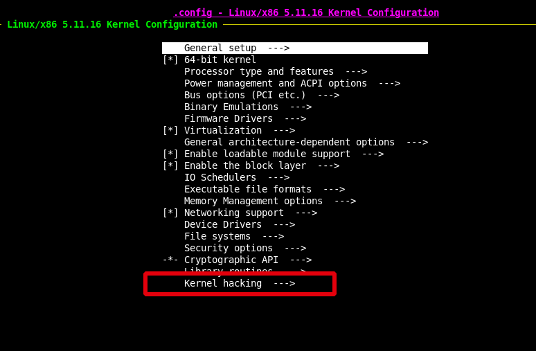
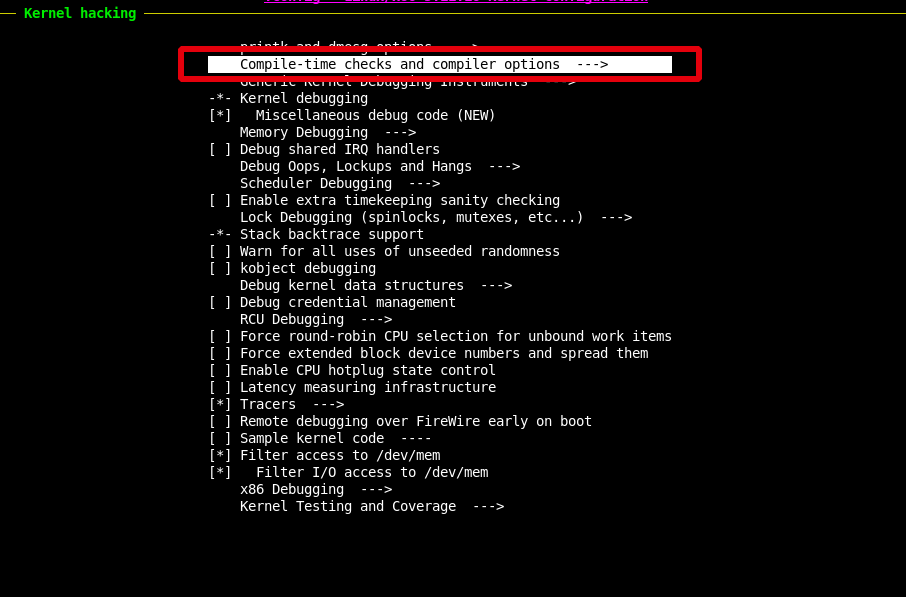
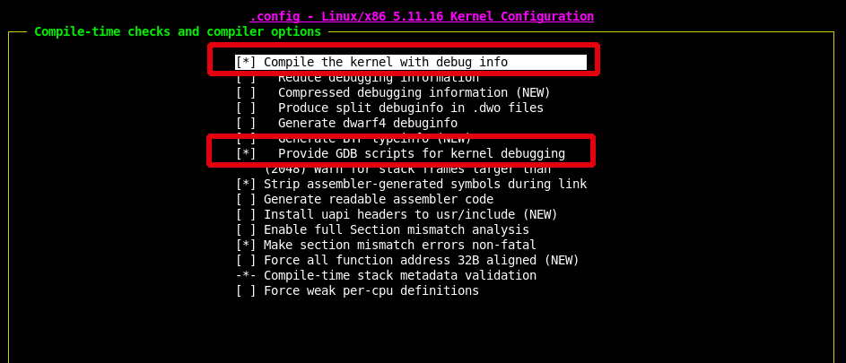
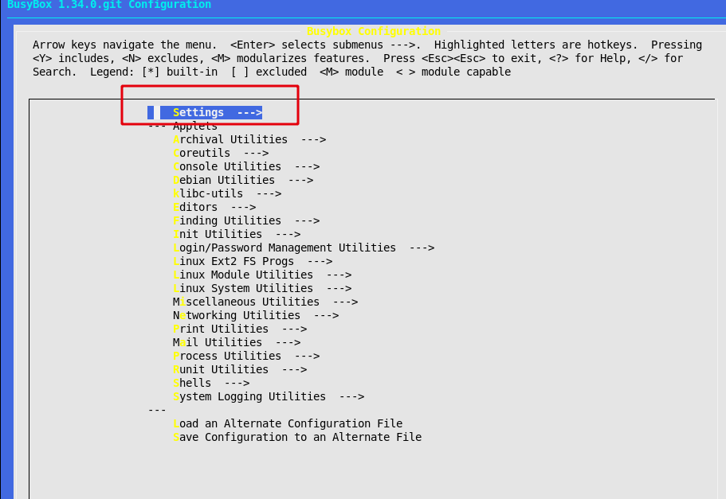
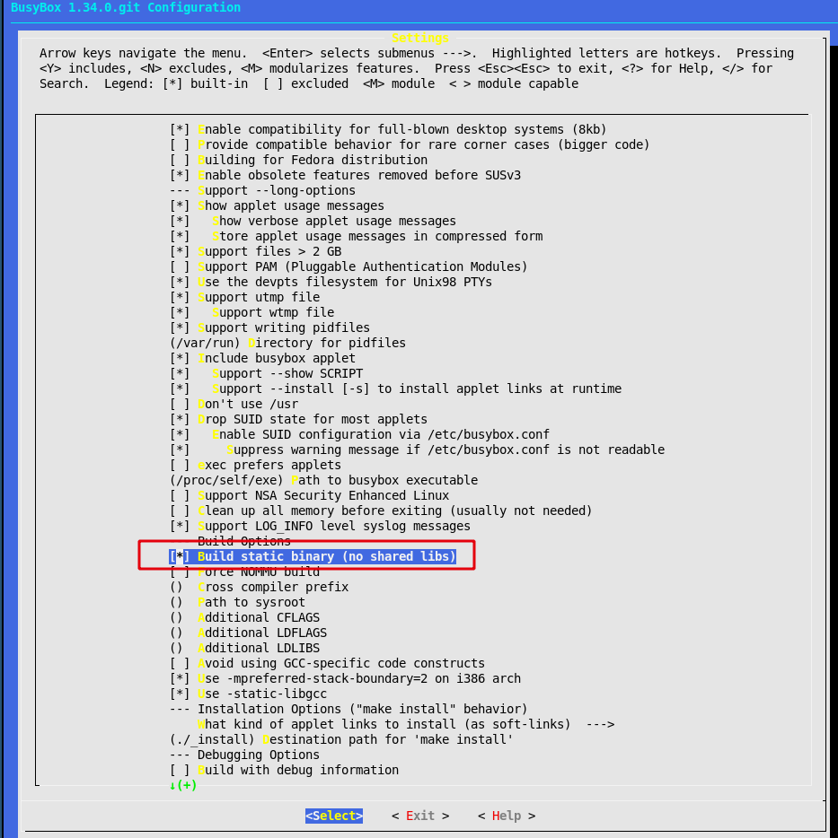

Linux内核调试
Table of Contents
1. KGDB调试内核
1.1. 调试版内核编译
下载解压内核源文件 https://www.kernel.org/
$ wget https://cdn.kernel.org/pub/linux/kernel/v5.x/linux-5.11.16.tar.xz $ xz -d linux-5.11.16.tar.gz $ tar xvf ./linux-5.11.16.tar
配置
$ sudo apt install flex bison $ make nconfig
进入 Kernel hacking —>

进入 Compile-time checks and compiler options —>

打开 [*] Compile the kernel with debug info 和 [*] Provide GDB scripts for kernel debugging

编译内核
$ sudo apt install bc $ make -j
过程中可能遇到的问题：
No rule to make target 'debian/certs/debian-uefi-certs.pem
打开 .config 文件， 修改 CONFIG_SYSTEM_TRUSTED_KEYS=""
$ grep CONFIG_SYSTEM_TRUSTED_KEYS .config CONFIG_SYSTEM_TRUSTED_KEYS=""
1.2. initramfs根文件系统的制作
1.2.1. busybox编译
busybox源码下载地址： https://www.busybox.net/downloads/ github项目地址：https://git.busybox.net/busybox
$ git clone https://git.busybox.net/busybox $ cd busybox $ make menuconfig
修改busybox编译选项为静态编译：
 
$ make install
编译完成后，会生成_install目录：
$ ls _install bin linuxrc sbin usr
1.2.2. 创建initramfs
$ mkdir initramfs
$ cd initramfs
$ cp busybox/_install/ ./ -rf
$ mkdir dev proc sys
$ sudo cp -a /dev/{null,console,tty,tty1,tty2,tty3,tty4} dev/
$ rm linuxrc
$ touch init; chmod a+x init
编辑init文件，拷贝以下内容：
$ cat init #!/bin/busybox sh mount -t proc none /proc mount -t sysfs none /sys exec /sbin/init
在创建的initramfs中包含busybox可执行程序、必须的设备文件、启动脚本init，并且init只挂载了虚拟文件系统procfs和sysfs，没有挂载磁盘根文件系统，所有操作都在内存中进行，不会落地。
打包initramfs：
$ find . -print0 | cpio --null -ov --format=newc | gzip -9 > ../initramfs.cpio.gz
1.2.3. 创建根文件系统方法
待补充
1.3. qemu 启动
安装qemu
$ sudo apt-get install qemu $ sudo apt-get install qemu-system $ sudo apt-get install qemu-user-static
使用内存盘启动 （-initrd参数指定内存盘文件）
$ qemu-system-x86_64 -kernel linux-5.11.16/arch/x86_64/boot/bzImage -initrd initramfs.cpio.gz -nographic -append "console=ttyS0 nokaslr" -S -s- 使用创建的根文件系统启动 待补充
1.4. gdb
$ gdb linux-5.11.16/vmlinux (gdb) target remote localhost:1234 (gdb) b start_kernel (gdb) c
https://consen.github.io/2018/01/17/debug-linux-kernel-with-qemu-and-gdb/
2. LFS debug
-S -s 参数
sudo qemu-system-x86_64 -nographic -drive file=/storage/kvm-img/kvm-fanyf/lfs/lfs-dbg.img,aio=io_uring,index=0,media=disk,if=virtio -kernel /home/fanyf/Workspace/Build/lfs/linux-6.1.11/arch/x86/boot/bzImage -append "root=/dev/vda console=ttyS0,115200 kgdboc=ttyS0,115200 nokaslr" -S -s sudo qemu-system-x86_64 -nographic -drive file=/storage/kvm-img/kvm-fanyf/lfs/lfs-dbg.img,aio=io_uring,index=0,media=disk,if=virtio -kernel /home/fanyf/Workspace/Build/lfs/linux-6.1.11/arch/x86/boot/bzImage -append "root=/dev/vda console=ttyS0,115200 kgdboc=ttyS0,115200 nokaslr" -smp cpus=1,maxcpus=1 -netdev bridge,br=virbr0,id=n1,helper=/usr/lib/qemu/qemu-bridge-helper -device virtio-net,netdev=n1 -S -s